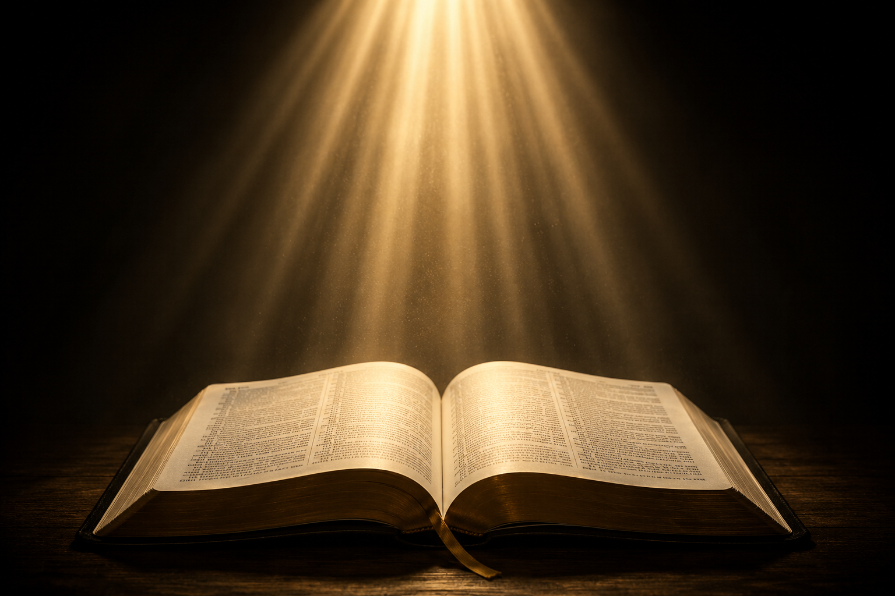
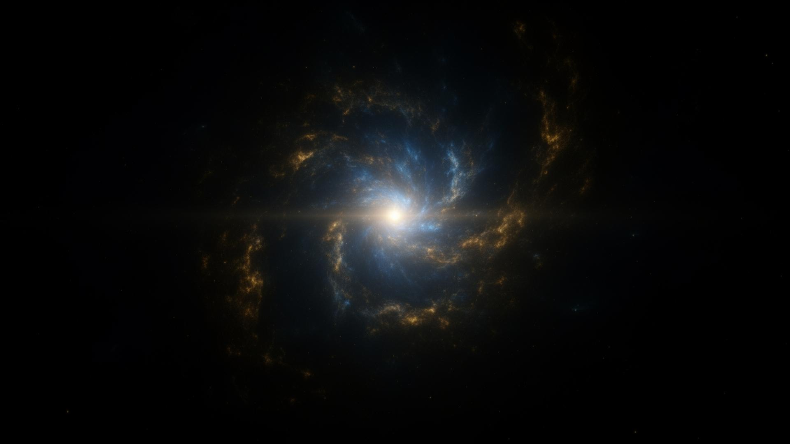
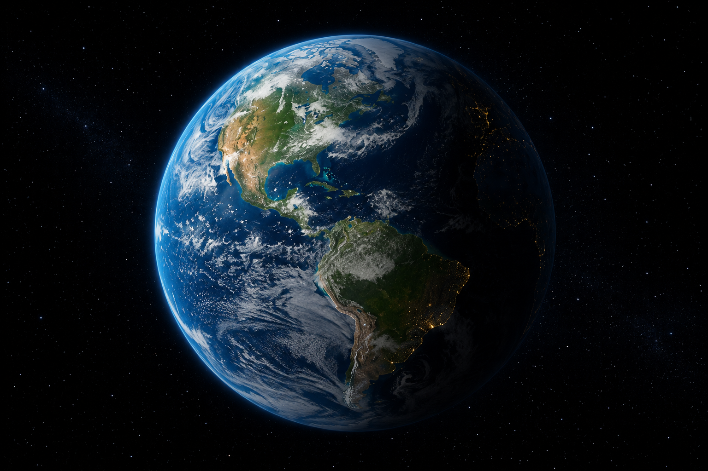
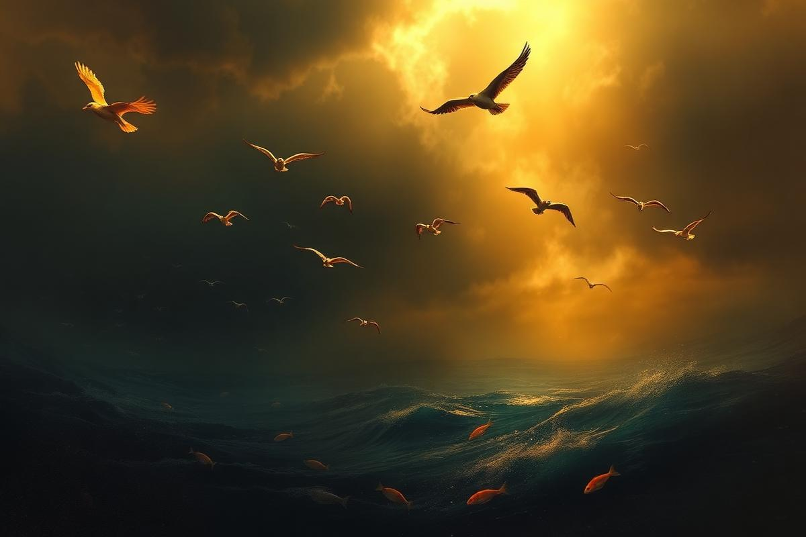

Dia 01
A Luz
Deus separou a luz das trevas, chamando a luz de Dia e as trevas de Noite. O primeiro raio do tempo começou a brilhar.
Gênesis 1:3-5
Uma jornada pelas páginas de Gênesis e pelas doutrinas da Igreja Adventista do Sétimo Dia, redescobrindo o Criador de todas as coisas — do vazio à vida, da escuridão à luz.
A Bíblia abre com uma das declarações mais grandiosas da história da humanidade: “No princípio criou Deus os céus e a terra” (Gênesis 1:1). Em uma única frase, as Escrituras respondem às maiores perguntas do ser humano — de onde viemos, quem somos, e quem nos fez.
Antes que o tempo existisse, antes que houvesse matéria, espaço ou vida, já havia Deus. Ele é o autor de tudo o que existe. A Terra, conforme Gênesis 1:2, encontrava-se “sem forma e vazia”, mergulhada em trevas sobre o abismo — até que o Espírito de Deus se moveu sobre as águas e a obra criadora teve início.
O Novo Testamento amplia essa revelação. João 1:1-3 declara: “No princípio era o Verbo, e o Verbo estava com Deus, e o Verbo era Deus. Todas as coisas foram feitas por intermédio dele, e, sem ele, nada do que foi feito se fez.” Esse Verbo é Jesus Cristo — Ele é o agente da criação, o Filho eterno que, juntamente com o Pai e o Espírito Santo, deu existência ao universo.

Hebreus 11:3 traz uma verdade que escapa a toda explicação humana: “Pela fé entendemos que foi o universo formado pela palavra de Deus, de maneira que o visível veio a existir das coisas que não aparecem.”
Esse versículo nos ensina que Deus não usou matéria preexistente nem materiais visíveis. Tudo o que existe surgiu do nada — apenas pelo poder de Sua palavra. Os teólogos chamam isso de creatio ex nihilo, ou seja, “criação a partir do nada”.
Essa é uma das diferenças fundamentais entre a fé bíblica e qualquer teoria humana sobre as origens: o universo não é resultado do acaso nem da matéria eterna, mas da vontade pessoal e poderosa do Deus Criador.

A maneira como Deus criou todas as coisas está resumida em uma frase do salmista: “Pois ele falou, e tudo se fez; ele ordenou, e tudo passou a existir” (Salmo 33:9).
Em todo o relato de Gênesis 1, repete-se a expressão “E disse Deus...”. A palavra divina é criadora. Ela não apenas descreve, ela realiza. Quando Deus fala, a realidade obedece. Isso revela a soberania absoluta do Criador sobre toda a matéria e todas as leis do universo.
Esse princípio é central: o mesmo Deus que disse “haja luz” é o que sustenta cada partícula, cada respiração e cada coração que pulsa hoje.
A Bíblia é clara quanto ao tempo da criação: “Porque em seis dias fez o Senhor os céus e a terra, o mar e tudo o que neles há, e ao sétimo dia descansou” (Êxodo 20:11; Gênesis 2:1-2).
Os adventistas do sétimo dia creem em seis dias literais de 24 horas, consecutivos e recentes, como afirma a doutrina fundamental nº 6 — A Criação. Cada dia é marcado pela mesma expressão: “e foi a tarde e a manhã”, indicando ciclos completos de dia e noite.
Ao final, no sétimo dia, Deus descansou e santificou o sábado — um memorial perpétuo da criação, celebrado pela Igreja até hoje.

Gênesis capítulo 1 descreve, com ordem e beleza, como Deus organizou o caos em harmonia. Os três primeiros dias formaram os domínios; os três seguintes os preencheram com habitantes.
Deus separou a luz das trevas, chamando a luz de Dia e as trevas de Noite. O primeiro raio do tempo começou a brilhar.
Criou a expansão entre as águas — separando as águas que estavam embaixo das que estavam por cima. Chamou-lhe Céus.
Ajuntou as águas, fazendo aparecer a terra seca. Em seguida, fez brotar relvas, ervas e árvores frutíferas conforme a sua espécie.
Colocou luminares no firmamento para governar o dia e a noite, para marcar tempos, dias e anos — e fez também as estrelas.
Encheu as águas de criaturas viventes e o ar de aves voadoras, conforme as suas espécies. E Deus os abençoou.
Criou os animais terrestres conforme as suas espécies. E, como coroa de Sua obra, formou o homem e a mulher à Sua imagem e semelhança.
No sétimo dia, Deus havia terminado toda a Sua obra. Descansou, abençoou esse dia e o santificou — instituindo o sábado como memorial eterno da criação.
Logo após criar o homem e a mulher à Sua imagem, Deus os abençoou e lhes deu uma ordem específica:
“Criou Deus, pois, o homem à sua imagem, à imagem de Deus o criou; homem e mulher os criou. E Deus os abençoou e lhes disse: Sede fecundos, multiplicai-vos, enchei a terra e sujeitai-a; dominai sobre os peixes do mar, sobre as aves dos céus e sobre todo animal que rasteja pela terra.” Gênesis 1:27-28
Essa ordem contém três grandes responsabilidades: frutificar (gerar família), encher a terra (povoar e cultivar) e dominar — não no sentido de explorar, mas de cuidar, como mordomos de Deus sobre toda a criação.
O apóstolo Paulo, ao pregar aos atenienses no Areópago, expressou com clareza a total dependência que a humanidade tem do Criador:
“Pois nele vivemos, e nos movemos, e existimos, como alguns dos vossos poetas têm dito: porque dele também somos geração.” Atos 17:28
Cada batimento do coração, cada respiração, cada raio de sol que aquece a pele — tudo vem dEle e por Ele é sustentado. O ser humano não é autônomo: ele é uma criatura que depende, a cada instante, do sopro de vida do Criador.
Compartilhar essa verdade com um amigo é parte da especialidade — porque reconhecer a Deus como sustentador é o primeiro passo para amá-Lo como Pai.

Durante um acampamento ou caminhada, o desbravador é convidado a contemplar a natureza com olhos espirituais. Como dizia Ellen G. White: “A natureza é a segunda Bíblia de Deus.” Aqui estão algumas sugestões de elementos da natureza para representar Deus como criador — e suas aplicações práticas.
Sua luz e calor sustentam toda forma de vida. Assim como o sol ilumina o mundo físico, Cristo é a Luz do mundo (João 8:12) — sem Ele, nossa alma morre nas trevas.
Suas raízes profundas a mantêm firme nas tempestades. Quem confia no Senhor é “como árvore plantada junto a corrente de águas” (Salmo 1:3) — frutifica no tempo certo e não murcha.
Sem ela, nada vive. Jesus disse: “Quem beber da água que eu lhe der nunca mais terá sede” (João 4:14). A água é símbolo do Espírito Santo, que renova e purifica a vida.
Hinário Adventista
Os três Membros da Divindade participaram da criação: o Pai ordenou (Gn 1:1), o Filho executou (Jo 1:3; Cl 1:16) e o Espírito Santo pairou sobre as águas (Gn 1:2).
O sábado foi instituído no Éden, antes do pecado e antes de existir qualquer povo. Por isso é para toda a humanidade — não apenas para um povo específico (Mc 2:27).
Esta frase aparece sete vezes em Gênesis 1. No sexto dia, Deus declara que tudo era “muito bom”. A criação original era perfeita — o mal não veio de Deus.
Somente o ser humano foi feito à imagem e semelhança de Deus (Gn 1:26). Isso significa que temos personalidade, liberdade moral, capacidade de amar e razão.
A Igreja Adventista crê que Deus é o Criador de todas as coisas e revelou nas Escrituras o relato autêntico de Sua atividade criadora em seis dias literais, formando uma semana literal.
Colossenses 1:16 afirma: “Nele foram criadas todas as coisas... tudo foi criado por meio dele e para ele.” O mesmo Jesus que morreu na cruz é o Criador do universo.
